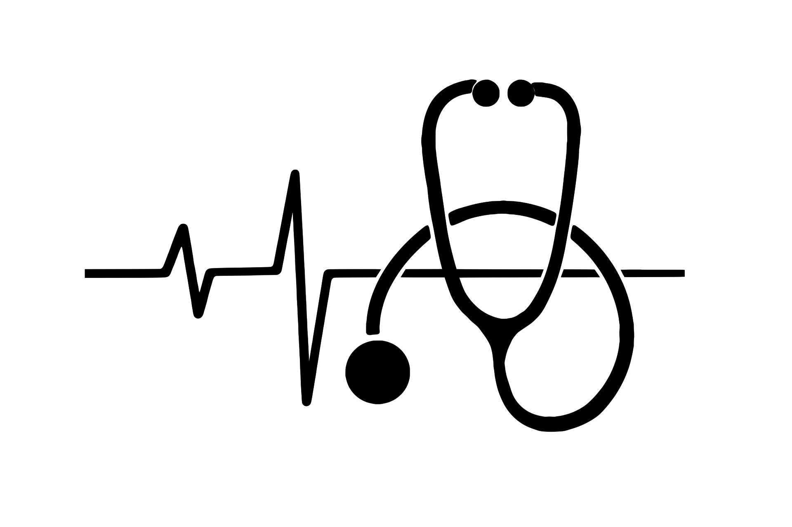

Présentation de l'auteure
Je m'appelle Ghofrane Ben Said, étudiante et passionnée par le développement web et la santé. Ce site a été réalisé dans le cadre d'un projet de cours pour mettre en pratique les technologies HTML5 et CSS3.
À travers ce site, je souhaite partager des informations utiles sur la prévention et le bien-être au quotidien.

Mentions légales
Auteure : Ghofrane Ben Said
Nom du site : Santé & Bien-être
Hébergement : GitHub Pages
Année de réalisation : 2026
Sources médicales : Organisation Mondiale de la Santé (OMS), Santé Publique Tunisie (informations générales uniquement).
Les informations publiées sont à caractère éducatif et ne remplacent en aucun cas l'avis d'un médecin ou d'un professionnel de santé.
En cas d'urgence médicale, appelez le 190 (SAMU), le 198 (numéro de protection civil tunisien) ou le 197 (police secours).
Contact
Pour toute question, rendez-vous sur la page de contact.